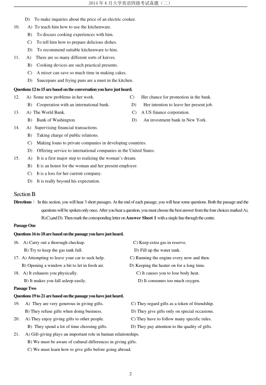
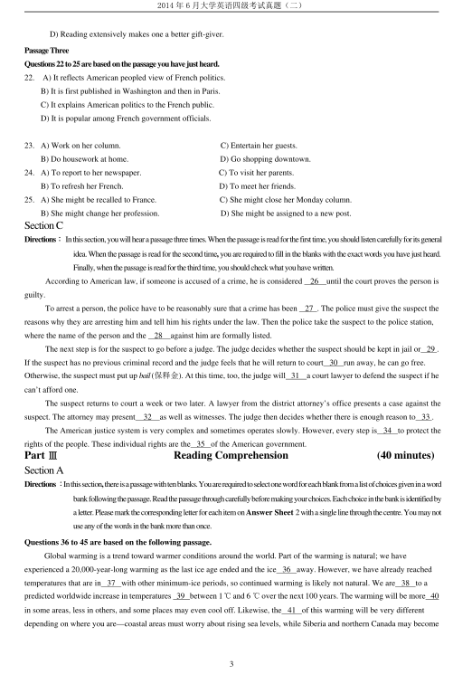
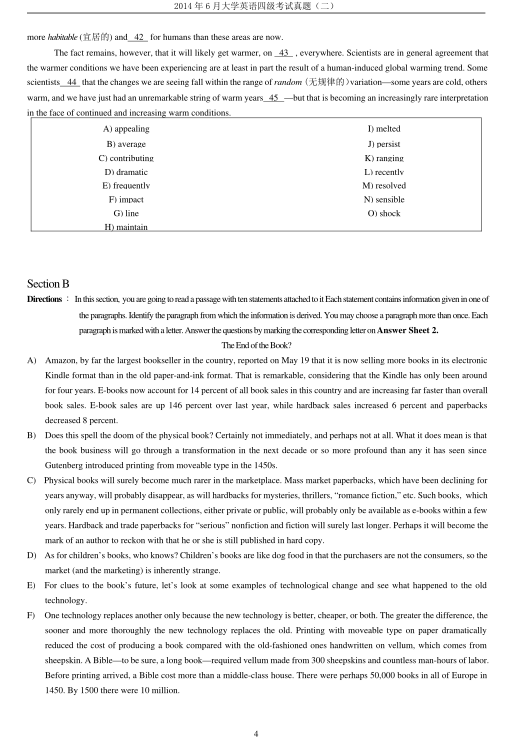
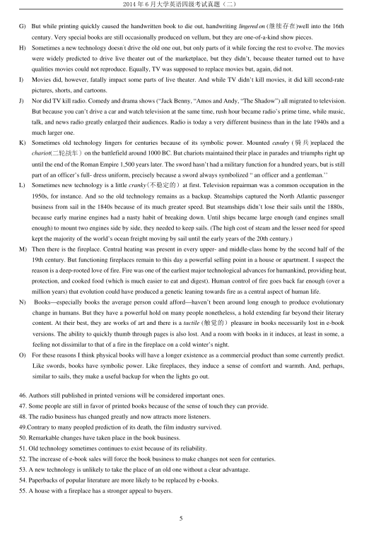
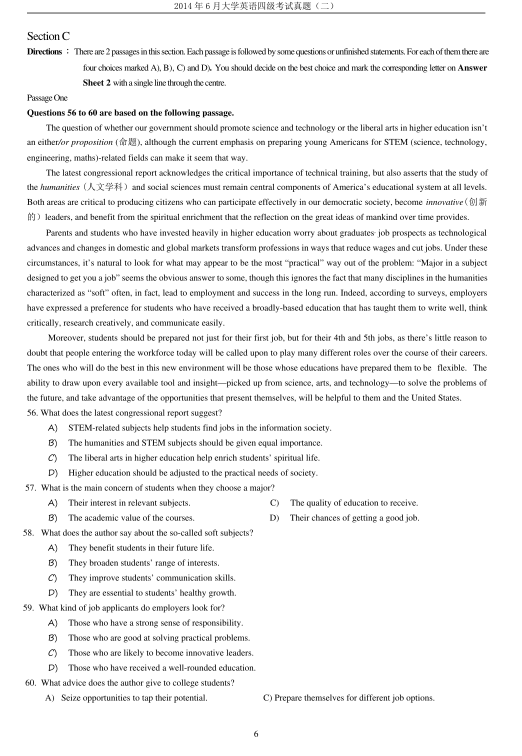
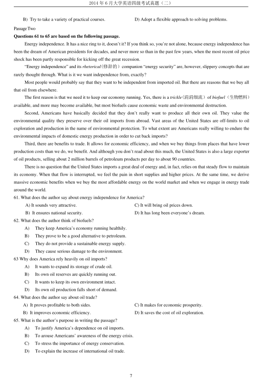

第 1 / 8 页

2014 年6 月大学英语四级考试真题（二）
1
2014 年6 月大学英语四级考试真题（第2 套）
Part I
Writing
(30 minutes)
Directions：Forthispart,youareallowed30minutestowriteashortessayonthefollowingquestion.Youshouldwriteatleast120 wordsbutno
morethan180 words.
Suppose a foreign friend of yours is coming to visit your campus, what is the most interesting place you would like to take
him/her to see and why?
Part II
Listening Comprehension
(30 minutes)
SectionA
Directions：Inthissection,youwillhear8shortconversationsand2longconversations.Attheendofeachconversation,oneormorequestionswill
beaskedaboutwhatwassaid.Boththeconversationandthequestionswillbespokenonlyonce.Aftereachquestiontherewillbe
a pause. During the pause, you must read the four choices marked A),B), C) and D), and decide which is the best answer. Then
markthecorrespondingletteronAnswer Sheet 1 withasinglelinethroughthecentre.
1
A)
They came in five different colors.
C) They were a very good design.
B)
They were good value for money.
D) They were sold out very quickly.
2.
A)
Ask her roommate not to speak loudly on the phone.
B)
Ask her roommate to make her phone calls outside.
C)
Go and find a quieter place to review her lessons.
D)
Report her problem to the dorm management.
3.
A) The washing machine is totally beyond repair.
B)
He will help Wendy prepare her annual report.
C)
Wendy should give priority to writing her report.
D)
The washing machine should be checked annually.
4.
A) The man fell down when removing the painting.
B)
The wall will be decorated with a new painting.
C)
The woman likes the painting on the wall.
D)
The painting is now being refrained.
5.
A) It must be missing.
C) The man took it to the market.
B)
It was left in the room.
D) She placed it on the dressing table.
6.
A) Go to a play.
C) Book some tickets.
B)
Meet Janet.
D) Have a get-together.
7.
A) One box of books is found missing.
C) Replacements have to be ordered.
B)
Some of the boxes arrived too late.
D) Some of the books are damaged.
8.
A) The man will pick up Professor Johnson at her office.
B)
The man did not expect his paper to be graded so soon.
C)
Professor Johnson has given the man a very high grade.
D)
Professor Johnson will talk to each student in her office.
Questions9to11arebasedontheconversationyouhavejustheard.
9.
A) To buy a present for his friend who is getting married.
B)
To find out the cost for a complete set of cookware.
C)
To see what he could ask his friends to buy for him.
查看 / 复制本页文字
2014 年6 月大学英语四级考试真题（二） 1 2014 年6 月大学英语四级考试真题（第2 套） Part I Writing (30 minutes) Directions：Forthispart,youareallowed30minutestowriteashortessayonthefollowingquestion.Youshouldwriteatleast120 wordsbutno morethan180 words. Suppose a foreign friend of yours is coming to visit your campus, what is the most interesting place you would like to take him/her to see and why? Part II Listening Comprehension (30 minutes) SectionA Directions：Inthissection,youwillhear8shortconversationsand2longconversations.Attheendofeachconversation,oneormorequestionswill beaskedaboutwhatwassaid.Boththeconversationandthequestionswillbespokenonlyonce.Aftereachquestiontherewillbe a pause. During the pause, you must read the four choices marked A),B), C) and D), and decide which is the best answer. Then markthecorrespondingletteronAnswer Sheet 1 withasinglelinethroughthecentre. 1 A) They came in five different colors. C) They were a very good design. B) They were good value for money. D) They were sold out very quickly. 2. A) Ask her roommate not to speak loudly on the phone. B) Ask her roommate to make her phone calls outside. C) Go and find a quieter place to review her lessons. D) Report her problem to the dorm management. 3. A) The washing machine is totally beyond repair. B) He will help Wendy prepare her annual report. C) Wendy should give priority to writing her report. D) The washing machine should be checked annually. 4. A) The man fell down when removing the painting. B) The wall will be decorated with a new painting. C) The woman likes the painting on the wall. D) The painting is now being refrained. 5. A) It must be missing. C) The man took it to the market. B) It was left in the room. D) She placed it on the dressing table. 6. A) Go to a play. C) Book some tickets. B) Meet Janet. D) Have a get-together. 7. A) One box of books is found missing. C) Replacements have to be ordered. B) Some of the boxes arrived too late. D) Some of the books are damaged. 8. A) The man will pick up Professor Johnson at her office. B) The man did not expect his paper to be graded so soon. C) Professor Johnson has given the man a very high grade. D) Professor Johnson will talk to each student in her office. Questions9to11arebasedontheconversationyouhavejustheard. 9. A) To buy a present for his friend who is getting married. B) To find out the cost for a complete set of cookware. C) To see what he could ask his friends to buy for him.
第 2 / 8 页

2014 年6 月大学英语四级考试真题（二）
2
D)
To make inquiries about the price of an electric cooker.
10.
A) To teach him how to use the kitchenware.
B)
To discuss cooking experiences with him.
C)
To tell him how to prepare delicious dishes.
D)
To recommend suitable kitchenware to him.
11.
A)
There are so many different sorts of knives.
B)
Cooking devices are such practical presents.
C)
A mixer can save so much time in making cakes.
D)
Saucepans and frying pans are a must in the kitchen.
Questions12to15arebasedontheconversationyouhavejustheard.
12.
A) Some new problems in her work.
C)
Her chance for promotion in the bank.
B)
Cooperation with an international bank.
D)
Her intention to leave her present job.
13.
A) The World Bank.
C)
A US finance corporation.
B)
Bank of Washington.
D)
An investment bank in New York.
14.
A) Supervising financial transactions.
B)
Taking charge of public relations.
C)
Making loans to private companies in developing countries.
D)
Offering service to international companies in the United States.
15.
A)
It is a first major step to realizing the woman’s dream.
B)
It is an honor for the woman and her present employer.
C)
It is a loss for her current company.
D)
It is really beyond his expectation.
Section B
Directions：In this section, you will hear 3 short passages. At the end of each passage, you will hear some questions. Both the passage and the
questionswillbespokenonlyonce.Afteryouhearaquestion,youmustchoosethebestanswerfromthefourchoicesmarkedA),
B),C),andD).ThenmarkthecorrespondingletteronAnswer Sheet 1 withasinglelinethroughthecentre.
PassageOne
Questions16to18arebasedonthepassageyouhavejustheard.
16.
A) Carry out a thorough checkup.
C) Keep extra gas in reserve.
B) Try to keep the gas tank full.
D) Fill up the water tank.
17. A) Attempting to leave your car to seek help.
C) Running the engine every now and then.
B) Opening a window a bit to let in fresh air.
D) Keeping the heater on for a long time.
18. A) It exhausts you physically.
C) It causes you to lose body heat.
B) It makes you fall asleep easily.
D) It consumes too much oxygen.
PassageTwo
Questions19to21arebasedonthepassageyouhavejustheard.
19.
A) They are very generous in giving gifts.
C) They regard gifts as a token of friendship.
B) They refuse gifts when doing business.
D) They give gifts only on special occasions.
20.
A) They enjoy giving gifts to other people.
C) They have to follow many specific rules.
B) They spend a lot of time choosing gifts.
D) They pay attention to the quality of gifts.
21.
A) Gift-giving plays an important role in human relationships.
B) We must be aware of cultural differences in giving gifts.
C) We must learn how to give gifts before going abroad.
查看 / 复制本页文字
2014 年6 月大学英语四级考试真题（二） 2 D) To make inquiries about the price of an electric cooker. 10. A) To teach him how to use the kitchenware. B) To discuss cooking experiences with him. C) To tell him how to prepare delicious dishes. D) To recommend suitable kitchenware to him. 11. A) There are so many different sorts of knives. B) Cooking devices are such practical presents. C) A mixer can save so much time in making cakes. D) Saucepans and frying pans are a must in the kitchen. Questions12to15arebasedontheconversationyouhavejustheard. 12. A) Some new problems in her work. C) Her chance for promotion in the bank. B) Cooperation with an international bank. D) Her intention to leave her present job. 13. A) The World Bank. C) A US finance corporation. B) Bank of Washington. D) An investment bank in New York. 14. A) Supervising financial transactions. B) Taking charge of public relations. C) Making loans to private companies in developing countries. D) Offering service to international companies in the United States. 15. A) It is a first major step to realizing the woman’s dream. B) It is an honor for the woman and her present employer. C) It is a loss for her current company. D) It is really beyond his expectation. Section B Directions：In this section, you will hear 3 short passages. At the end of each passage, you will hear some questions. Both the passage and the questionswillbespokenonlyonce.Afteryouhearaquestion,youmustchoosethebestanswerfromthefourchoicesmarkedA), B),C),andD).ThenmarkthecorrespondingletteronAnswer Sheet 1 withasinglelinethroughthecentre. PassageOne Questions16to18arebasedonthepassageyouhavejustheard. 16. A) Carry out a thorough checkup. C) Keep extra gas in reserve. B) Try to keep the gas tank full. D) Fill up the water tank. 17. A) Attempting to leave your car to seek help. C) Running the engine every now and then. B) Opening a window a bit to let in fresh air. D) Keeping the heater on for a long time. 18. A) It exhausts you physically. C) It causes you to lose body heat. B) It makes you fall asleep easily. D) It consumes too much oxygen. PassageTwo Questions19to21arebasedonthepassageyouhavejustheard. 19. A) They are very generous in giving gifts. C) They regard gifts as a token of friendship. B) They refuse gifts when doing business. D) They give gifts only on special occasions. 20. A) They enjoy giving gifts to other people. C) They have to follow many specific rules. B) They spend a lot of time choosing gifts. D) They pay attention to the quality of gifts. 21. A) Gift-giving plays an important role in human relationships. B) We must be aware of cultural differences in giving gifts. C) We must learn how to give gifts before going abroad.
第 3 / 8 页

2014 年6 月大学英语四级考试真题（二）
3
D) Reading extensively makes one a better gift-giver.
PassageThree
Questions22to25arebasedonthepassageyouhavejustheard.
22.
A) It reflects American peopled view of French politics.
B) It is first published in Washington and then in Paris.
C) It explains American politics to the French public.
D) It is popular among French government officials.
23. A) Work on her column.
C) Entertain her guests.
B) Do housework at home.
D) Go shopping downtown.
24. A) To report to her newspaper.
C) To visit her parents.
B) To refresh her French.
D) To meet her friends.
25. A) She might be recalled to France.
C) She might close her Monday column.
B) She might change her profession.
D) She might be assigned to a new post.
Section C
Directions：Inthissection,youwillhearapassagethreetimes.Whenthepassageisreadforthefirsttime,youshouldlistencarefullyforitsgeneral
idea.When thepassageis readfor thesecond time, youarerequiredto fillintheblankswith theexactwords you havejustheard.
Finally,whenthepassageisreadforthethirdtime,youshouldcheckwhatyouhavewritten.
According to American law, if someone is accused of a crime, he is considered
26
until the court proves the person is
guilty.
To arrest a person, the police have to be reasonably sure that a crime has been
27 . The police must give the suspect the
reasons why they are arresting him and tell him his rights under the law. Then the police take the suspect to the police station,
where the name of the person and the
28
against him are formally listed.
The next step is for the suspect to go before a judge. The judge decides whether the suspect should be kept in jail or 29 .
If the suspect has no previous criminal record and the judge feels that he will return to court 30 run away, he can go free.
Otherwise, the suspect must put up bail(保释金). At this time, too, the judge will 31
a court lawyer to defend the suspect if he
can’t afford one.
The suspect returns to court a week or two later. A lawyer from the district attorney’s office presents a case against the
suspect. The attorney may present
32
as well as witnesses. The judge then decides whether there is enough reason to 33 .
The American justice system is very complex and sometimes operates slowly. However, every step is 34 to protect the
rights of the people. These individual rights are the 35 of the American government.
Part Ⅲ
Reading Comprehension
(40 minutes)
Section A
Directions：Inthissection,thereisapassagewithtenblanks.Youarerequiredtoselectonewordforeachblankfromalistofchoicesgiveninaword
bankfollowingthepassage.Readthepassagethroughcarefullybeforemakingyourchoices.Eachchoiceinthebankisidentifiedby
aletter.PleasemarkthecorrespondingletterforeachitemonAnswer Sheet 2withasinglelinethroughthecentre.Youmaynot
useanyofthewordsinthebankmorethanonce.
Questions 36 to 45 are based on the following passage.
Global warming is a trend toward warmer conditions around the world. Part of the warming is natural; we have
experienced a 20,000-year-long warming as the last ice age ended and the ice 36 away. However, we have already reached
temperatures that are in 37 with other minimum-ice periods, so continued warming is likely not natural. We are 38 to a
predicted worldwide increase in temperatures 39 between 1℃and 6 ℃over the next 100 years. The warming will be more 40
in some areas, less in others, and some places may even cool off. Likewise, the 41 of this warming will be very different
depending on where you are—coastal areas must worry about rising sea levels, while Siberia and northern Canada may become
查看 / 复制本页文字
2014 年6 月大学英语四级考试真题（二） 3 D) Reading extensively makes one a better gift-giver. PassageThree Questions22to25arebasedonthepassageyouhavejustheard. 22. A) It reflects American peopled view of French politics. B) It is first published in Washington and then in Paris. C) It explains American politics to the French public. D) It is popular among French government officials. 23. A) Work on her column. C) Entertain her guests. B) Do housework at home. D) Go shopping downtown. 24. A) To report to her newspaper. C) To visit her parents. B) To refresh her French. D) To meet her friends. 25. A) She might be recalled to France. C) She might close her Monday column. B) She might change her profession. D) She might be assigned to a new post. Section C Directions：Inthissection,youwillhearapassagethreetimes.Whenthepassageisreadforthefirsttime,youshouldlistencarefullyforitsgeneral idea.When thepassageis readfor thesecond time, youarerequiredto fillintheblankswith theexactwords you havejustheard. Finally,whenthepassageisreadforthethirdtime,youshouldcheckwhatyouhavewritten. According to American law, if someone is accused of a crime, he is considered 26 until the court proves the person is guilty. To arrest a person, the police have to be reasonably sure that a crime has been 27 . The police must give the suspect the reasons why they are arresting him and tell him his rights under the law. Then the police take the suspect to the police station, where the name of the person and the 28 against him are formally listed. The next step is for the suspect to go before a judge. The judge decides whether the suspect should be kept in jail or 29 . If the suspect has no previous criminal record and the judge feels that he will return to court 30 run away, he can go free. Otherwise, the suspect must put up bail(保释金). At this time, too, the judge will 31 a court lawyer to defend the suspect if he can’t afford one. The suspect returns to court a week or two later. A lawyer from the district attorney’s office presents a case against the suspect. The attorney may present 32 as well as witnesses. The judge then decides whether there is enough reason to 33 . The American justice system is very complex and sometimes operates slowly. However, every step is 34 to protect the rights of the people. These individual rights are the 35 of the American government. Part Ⅲ Reading Comprehension (40 minutes) Section A Directions：Inthissection,thereisapassagewithtenblanks.Youarerequiredtoselectonewordforeachblankfromalistofchoicesgiveninaword bankfollowingthepassage.Readthepassagethroughcarefullybeforemakingyourchoices.Eachchoiceinthebankisidentifiedby aletter.PleasemarkthecorrespondingletterforeachitemonAnswer Sheet 2withasinglelinethroughthecentre.Youmaynot useanyofthewordsinthebankmorethanonce. Questions 36 to 45 are based on the following passage. Global warming is a trend toward warmer conditions around the world. Part of the warming is natural; we have experienced a 20,000-year-long warming as the last ice age ended and the ice 36 away. However, we have already reached temperatures that are in 37 with other minimum-ice periods, so continued warming is likely not natural. We are 38 to a predicted worldwide increase in temperatures 39 between 1℃and 6 ℃over the next 100 years. The warming will be more 40 in some areas, less in others, and some places may even cool off. Likewise, the 41 of this warming will be very different depending on where you are—coastal areas must worry about rising sea levels, while Siberia and northern Canada may become
第 4 / 8 页

2014 年6 月大学英语四级考试真题（二）
4
more habitable (宜居的) and 42 for humans than these areas are now.
The fact remains, however, that it will likely get warmer, on 43 , everywhere. Scientists are in general agreement that
the warmer conditions we have been experiencing are at least in part the result of a human-induced global warming trend. Some
scientists
44 that the changes we are seeing fall within the range of random (无规律的）variation—some years are cold, others
warm, and we have just had an unremarkable string of warm years 45 —but that is becoming an increasingly rare interpretation
in the face of continued and increasing warm conditions.
Section B
Directions：Inthissection, youaregoingtoreadapassagewithtenstatementsattachedtoitEachstatementcontainsinformationgiveninoneof
theparagraphs. Identify the paragraph from which the information is derived. You maychoose a paragraph more than once. Each
paragraphismarkedwithaletter.AnswerthequestionsbymarkingthecorrespondingletteronAnswer Sheet 2.
TheEndoftheBook?
A)
Amazon, by far the largest bookseller in the country, reported on May 19 that it is now selling more books in its electronic
Kindle format than in the old paper-and-ink format. That is remarkable, considering that the Kindle has only been around
for four years. E-books now account for 14 percent of all book sales in this country and are increasing far faster than overall
book sales. E-book sales are up 146 percent over last year, while hardback sales increased 6 percent and paperbacks
decreased 8 percent.
B)
Does this spell the doom of the physical book? Certainly not immediately, and perhaps not at all. What it does mean is that
the book business will go through a transformation in the next decade or so more profound than any it has seen since
Gutenberg introduced printing from moveable type in the 1450s.
C)
Physical books will surely become much rarer in the marketplace. Mass market paperbacks, which have been declining for
years anyway, will probably disappear, as will hardbacks for mysteries, thrillers, “romance fiction,” etc. Such books, which
only rarely end up in permanent collections, either private or public, will probably only be available as e-books within a few
years. Hardback and trade paperbacks for “serious” nonfiction and fiction will surely last longer. Perhaps it will become the
mark of an author to reckon with that he or she is still published in hard copy.
D)
As for children’s books, who knows? Children’s books are like dog food in that the purchasers are not the consumers, so the
market (and the marketing) is inherently strange.
E)
For clues to the book’s future, let’s look at some examples of technological change and see what happened to the old
technology.
F)
One technology replaces another only because the new technology is better, cheaper, or both. The greater the difference, the
sooner and more thoroughly the new technology replaces the old. Printing with moveable type on paper dramatically
reduced the cost of producing a book compared with the old-fashioned ones handwritten on vellum, which comes from
sheepskin. A Bible—to be sure, a long book—required vellum made from 300 sheepskins and countless man-hours of labor.
Before printing arrived, a Bible cost more than a middle-class house. There were perhaps 50,000 books in all of Europe in
1450. By 1500 there were 10 million.
A) appealing
I) melted
B) average
J) persist
C) contributing
K) ranging
D) dramatic
L) recently
E) frequently
M) resolved
F) impact
N) sensible
G) line
O) shock
H) maintain
查看 / 复制本页文字
2014 年6 月大学英语四级考试真题（二） 4 more habitable (宜居的) and 42 for humans than these areas are now. The fact remains, however, that it will likely get warmer, on 43 , everywhere. Scientists are in general agreement that the warmer conditions we have been experiencing are at least in part the result of a human-induced global warming trend. Some scientists 44 that the changes we are seeing fall within the range of random (无规律的）variation—some years are cold, others warm, and we have just had an unremarkable string of warm years 45 —but that is becoming an increasingly rare interpretation in the face of continued and increasing warm conditions. Section B Directions：Inthissection, youaregoingtoreadapassagewithtenstatementsattachedtoitEachstatementcontainsinformationgiveninoneof theparagraphs. Identify the paragraph from which the information is derived. You maychoose a paragraph more than once. Each paragraphismarkedwithaletter.AnswerthequestionsbymarkingthecorrespondingletteronAnswer Sheet 2. TheEndoftheBook? A) Amazon, by far the largest bookseller in the country, reported on May 19 that it is now selling more books in its electronic Kindle format than in the old paper-and-ink format. That is remarkable, considering that the Kindle has only been around for four years. E-books now account for 14 percent of all book sales in this country and are increasing far faster than overall book sales. E-book sales are up 146 percent over last year, while hardback sales increased 6 percent and paperbacks decreased 8 percent. B) Does this spell the doom of the physical book? Certainly not immediately, and perhaps not at all. What it does mean is that the book business will go through a transformation in the next decade or so more profound than any it has seen since Gutenberg introduced printing from moveable type in the 1450s. C) Physical books will surely become much rarer in the marketplace. Mass market paperbacks, which have been declining for years anyway, will probably disappear, as will hardbacks for mysteries, thrillers, “romance fiction,” etc. Such books, which only rarely end up in permanent collections, either private or public, will probably only be available as e-books within a few years. Hardback and trade paperbacks for “serious” nonfiction and fiction will surely last longer. Perhaps it will become the mark of an author to reckon with that he or she is still published in hard copy. D) As for children’s books, who knows? Children’s books are like dog food in that the purchasers are not the consumers, so the market (and the marketing) is inherently strange. E) For clues to the book’s future, let’s look at some examples of technological change and see what happened to the old technology. F) One technology replaces another only because the new technology is better, cheaper, or both. The greater the difference, the sooner and more thoroughly the new technology replaces the old. Printing with moveable type on paper dramatically reduced the cost of producing a book compared with the old-fashioned ones handwritten on vellum, which comes from sheepskin. A Bible—to be sure, a long book—required vellum made from 300 sheepskins and countless man-hours of labor. Before printing arrived, a Bible cost more than a middle-class house. There were perhaps 50,000 books in all of Europe in 1450. By 1500 there were 10 million. A) appealing I) melted B) average J) persist C) contributing K) ranging D) dramatic L) recently E) frequently M) resolved F) impact N) sensible G) line O) shock H) maintain
第 5 / 8 页

2014 年6 月大学英语四级考试真题（二）
5
G)
But while printing quickly caused the handwritten book to die out, handwriting lingered on (继续存在)well into the 16th
century. Very special books are still occasionally produced on vellum, but they are one-of-a-kind show pieces.
H)
Sometimes a new technology doesn’t drive the old one out, but only parts of it while forcing the rest to evolve. The movies
were widely predicted to drive live theater out of the marketplace, but they didn’t, because theater turned out to have
qualities movies could not reproduce. Equally, TV was supposed to replace movies but, again, did not.
I)
Movies did, however, fatally impact some parts of live theater. And while TV didn’t kill movies, it did kill second-rate
pictures, shorts, and cartoons.
J)
Nor did TV kill radio. Comedy and drama shows (“Jack Benny, “Amos and Andy, “The Shadow”) all migrated to television.
But because you can’t drive a car and watch television at the same time, rush hour became radio’s prime time, while music,
talk, and news radio greatly enlarged their audiences. Radio is today a very different business than in the late 1940s and a
much larger one.
K)
Sometimes old technology lingers for centuries because of its symbolic power. Mounted cavalry ( 骑兵)replaced the
chariot(二轮战车）on the battlefield around 1000 BC. But chariots maintained their place in parades and triumphs right up
until the end of the Roman Empire 1,500 years later. The sword hasn’t had a military function for a hundred years, but is still
part of an officer’s full- dress uniform, precisely because a sword always symbolized “ an officer and a gentleman.’’
L)
Sometimes new technology is a little cranky(不稳定的）at first. Television repairman was a common occupation in the
1950s, for instance. And so the old technology remains as a backup. Steamships captured the North Atlantic passenger
business from sail in the 1840s because of its much greater speed. But steamships didn’t lose their sails until the 1880s,
because early marine engines had a nasty habit of breaking down. Until ships became large enough (and engines small
enough) to mount two engines side by side, they needed to keep sails. (The high cost of steam and the lesser need for speed
kept the majority of the world’s ocean freight moving by sail until the early years of the 20th century.)
M) Then there is the fireplace. Central heating was present in every upper- and middle-class home by the second half of the
19th century. But functioning fireplaces remain to this day a powerful selling point in a house or apartment. I suspect the
reason is a deep-rooted love of fire. Fire was one of the earliest major technological advances for humankind, providing heat,
protection, and cooked food (which is much easier to eat and digest). Human control of fire goes back far enough (over a
million years) that evolution could have produced a genetic leaning towards fire as a central aspect of human life.
N)
Books—especially books the average person could afford—haven’t been around long enough to produce evolutionary
change in humans. But they have a powerful hold on many people nonetheless, a hold extending far beyond their literary
content. At their best, they are works of art and there is a tactile (触觉的）pleasure in books necessarily lost in e-book
versions. The ability to quickly thumb through pages is also lost. And a room with books in it induces, at least in some, a
feeling not dissimilar to that of a fire in the fireplace on a cold winter’s night.
O)
For these reasons I think physical books will have a longer existence as a commercial product than some currently predict.
Like swords, books have symbolic power. Like fireplaces, they induce a sense of comfort and warmth. And, perhaps,
similar to sails, they make a useful backup for when the lights go out.
46. Authors still published in printed versions will be considered important ones.
47. Some people are still in favor of printed books because of the sense of touch they can provide.
48. The radio business has changed greatly and now attracts more listeners.
49.Contrary to many peopled prediction of its death, the film industry survived.
50. Remarkable changes have taken place in the book business.
51. Old technology sometimes continues to exist because of its reliability.
52. The increase of e-book sales will force the book business to make changes not seen for centuries.
53. A new technology is unlikely to take the place of an old one without a clear advantage.
54. Paperbacks of popular literature are more likely to be replaced by e-books.
55. A house with a fireplace has a stronger appeal to buyers.
查看 / 复制本页文字
2014 年6 月大学英语四级考试真题（二） 5 G) But while printing quickly caused the handwritten book to die out, handwriting lingered on (继续存在)well into the 16th century. Very special books are still occasionally produced on vellum, but they are one-of-a-kind show pieces. H) Sometimes a new technology doesn’t drive the old one out, but only parts of it while forcing the rest to evolve. The movies were widely predicted to drive live theater out of the marketplace, but they didn’t, because theater turned out to have qualities movies could not reproduce. Equally, TV was supposed to replace movies but, again, did not. I) Movies did, however, fatally impact some parts of live theater. And while TV didn’t kill movies, it did kill second-rate pictures, shorts, and cartoons. J) Nor did TV kill radio. Comedy and drama shows (“Jack Benny, “Amos and Andy, “The Shadow”) all migrated to television. But because you can’t drive a car and watch television at the same time, rush hour became radio’s prime time, while music, talk, and news radio greatly enlarged their audiences. Radio is today a very different business than in the late 1940s and a much larger one. K) Sometimes old technology lingers for centuries because of its symbolic power. Mounted cavalry ( 骑兵)replaced the chariot(二轮战车）on the battlefield around 1000 BC. But chariots maintained their place in parades and triumphs right up until the end of the Roman Empire 1,500 years later. The sword hasn’t had a military function for a hundred years, but is still part of an officer’s full- dress uniform, precisely because a sword always symbolized “ an officer and a gentleman.’’ L) Sometimes new technology is a little cranky(不稳定的）at first. Television repairman was a common occupation in the 1950s, for instance. And so the old technology remains as a backup. Steamships captured the North Atlantic passenger business from sail in the 1840s because of its much greater speed. But steamships didn’t lose their sails until the 1880s, because early marine engines had a nasty habit of breaking down. Until ships became large enough (and engines small enough) to mount two engines side by side, they needed to keep sails. (The high cost of steam and the lesser need for speed kept the majority of the world’s ocean freight moving by sail until the early years of the 20th century.) M) Then there is the fireplace. Central heating was present in every upper- and middle-class home by the second half of the 19th century. But functioning fireplaces remain to this day a powerful selling point in a house or apartment. I suspect the reason is a deep-rooted love of fire. Fire was one of the earliest major technological advances for humankind, providing heat, protection, and cooked food (which is much easier to eat and digest). Human control of fire goes back far enough (over a million years) that evolution could have produced a genetic leaning towards fire as a central aspect of human life. N) Books—especially books the average person could afford—haven’t been around long enough to produce evolutionary change in humans. But they have a powerful hold on many people nonetheless, a hold extending far beyond their literary content. At their best, they are works of art and there is a tactile (触觉的）pleasure in books necessarily lost in e-book versions. The ability to quickly thumb through pages is also lost. And a room with books in it induces, at least in some, a feeling not dissimilar to that of a fire in the fireplace on a cold winter’s night. O) For these reasons I think physical books will have a longer existence as a commercial product than some currently predict. Like swords, books have symbolic power. Like fireplaces, they induce a sense of comfort and warmth. And, perhaps, similar to sails, they make a useful backup for when the lights go out. 46. Authors still published in printed versions will be considered important ones. 47. Some people are still in favor of printed books because of the sense of touch they can provide. 48. The radio business has changed greatly and now attracts more listeners. 49.Contrary to many peopled prediction of its death, the film industry survived. 50. Remarkable changes have taken place in the book business. 51. Old technology sometimes continues to exist because of its reliability. 52. The increase of e-book sales will force the book business to make changes not seen for centuries. 53. A new technology is unlikely to take the place of an old one without a clear advantage. 54. Paperbacks of popular literature are more likely to be replaced by e-books. 55. A house with a fireplace has a stronger appeal to buyers.
第 6 / 8 页

2014 年6 月大学英语四级考试真题（二）
6
Section C
Directions：Thereare2passagesinthissection.Eachpassageisfollowedbysomequestionsorunfinishedstatements.Foreachofthemthereare
four choices marked A), B), C) and D). You should decide on the best choice and mark the corresponding letter on Answer
Sheet 2 withasinglelinethroughthecentre.
PassageOne
Questions 56 to 60 are based on the following passage.
The question of whether our government should promote science and technology or the liberal arts in higher education isn’t
an either/or proposition (命题), although the current emphasis on preparing young Americans for STEM (science, technology,
engineering, maths)-related fields can make it seem that way.
The latest congressional report acknowledges the critical importance of technical training, but also asserts that the study of
the humanities (人文学科）and social sciences must remain central components of America’s educational system at all levels.
Both areas are critical to producing citizens who can participate effectively in our democratic society, become innovative(创新
的）leaders, and benefit from the spiritual enrichment that the reflection on the great ideas of mankind over time provides.
Parents and students who have invested heavily in higher education worry about graduates, job prospects as technological
advances and changes in domestic and global markets transform professions in ways that reduce wages and cut jobs. Under these
circumstances, it’s natural to look for what may appear to be the most “practical” way out of the problem: “Major in a subject
designed to get you a job” seems the obvious answer to some, though this ignores the fact that many disciplines in the humanities
characterized as “soft” often, in fact, lead to employment and success in the long run. Indeed, according to surveys, employers
have expressed a preference for students who have received a broadly-based education that has taught them to write well, think
critically, research creatively, and communicate easily.
Moreover, students should be prepared not just for their first job, but for their 4th and 5th jobs, as there’s little reason to
doubt that people entering the workforce today will be called upon to play many different roles over the course of their careers.
The ones who will do the best in this new environment will be those whose educations have prepared them to be flexible. The
ability to draw upon every available tool and insight—picked up from science, arts, and technology—to solve the problems of
the future, and take advantage of the opportunities that present themselves, will be helpful to them and the United States.
56. What does the latest congressional report suggest?
A)
STEM-related subjects help students find jobs in the information society.
B)
The humanities and STEM subjects should be given equal importance.
C)
The liberal arts in higher education help enrich students’ spiritual life.
D)
Higher education should be adjusted to the practical needs of society.
57. What is the main concern of students when they choose a major?
A)
Their interest in relevant subjects.
C)
The quality of education to receive.
B)
The academic value of the courses.
D)
Their chances of getting a good job.
58. What does the author say about the so-called soft subjects?
A)
They benefit students in their future life.
B)
They broaden students’ range of interests.
C)
They improve students’ communication skills.
D)
They are essential to students’ healthy growth.
59. What kind of job applicants do employers look for?
A)
Those who have a strong sense of responsibility.
B)
Those who are good at solving practical problems.
C)
Those who are likely to become innovative leaders.
D)
Those who have received a well-rounded education.
60. What advice does the author give to college students?
A) Seize opportunities to tap their potential.
C) Prepare themselves for different job options.
查看 / 复制本页文字
2014 年6 月大学英语四级考试真题（二） 6 Section C Directions：Thereare2passagesinthissection.Eachpassageisfollowedbysomequestionsorunfinishedstatements.Foreachofthemthereare four choices marked A), B), C) and D). You should decide on the best choice and mark the corresponding letter on Answer Sheet 2 withasinglelinethroughthecentre. PassageOne Questions 56 to 60 are based on the following passage. The question of whether our government should promote science and technology or the liberal arts in higher education isn’t an either/or proposition (命题), although the current emphasis on preparing young Americans for STEM (science, technology, engineering, maths)-related fields can make it seem that way. The latest congressional report acknowledges the critical importance of technical training, but also asserts that the study of the humanities (人文学科）and social sciences must remain central components of America’s educational system at all levels. Both areas are critical to producing citizens who can participate effectively in our democratic society, become innovative(创新 的）leaders, and benefit from the spiritual enrichment that the reflection on the great ideas of mankind over time provides. Parents and students who have invested heavily in higher education worry about graduates, job prospects as technological advances and changes in domestic and global markets transform professions in ways that reduce wages and cut jobs. Under these circumstances, it’s natural to look for what may appear to be the most “practical” way out of the problem: “Major in a subject designed to get you a job” seems the obvious answer to some, though this ignores the fact that many disciplines in the humanities characterized as “soft” often, in fact, lead to employment and success in the long run. Indeed, according to surveys, employers have expressed a preference for students who have received a broadly-based education that has taught them to write well, think critically, research creatively, and communicate easily. Moreover, students should be prepared not just for their first job, but for their 4th and 5th jobs, as there’s little reason to doubt that people entering the workforce today will be called upon to play many different roles over the course of their careers. The ones who will do the best in this new environment will be those whose educations have prepared them to be flexible. The ability to draw upon every available tool and insight—picked up from science, arts, and technology—to solve the problems of the future, and take advantage of the opportunities that present themselves, will be helpful to them and the United States. 56. What does the latest congressional report suggest? A) STEM-related subjects help students find jobs in the information society. B) The humanities and STEM subjects should be given equal importance. C) The liberal arts in higher education help enrich students’ spiritual life. D) Higher education should be adjusted to the practical needs of society. 57. What is the main concern of students when they choose a major? A) Their interest in relevant subjects. C) The quality of education to receive. B) The academic value of the courses. D) Their chances of getting a good job. 58. What does the author say about the so-called soft subjects? A) They benefit students in their future life. B) They broaden students’ range of interests. C) They improve students’ communication skills. D) They are essential to students’ healthy growth. 59. What kind of job applicants do employers look for? A) Those who have a strong sense of responsibility. B) Those who are good at solving practical problems. C) Those who are likely to become innovative leaders. D) Those who have received a well-rounded education. 60. What advice does the author give to college students? A) Seize opportunities to tap their potential. C) Prepare themselves for different job options.
第 7 / 8 页

2014 年6 月大学英语四级考试真题（二）
7
B) Try to take a variety of practical courses.
D) Adopt a flexible approach to solving problems.
PassageTwo
Questions 61 to 65 are based on the following passage.
Energy independence. It has a nice ring to it, doesn’t it? If you think so, you’re not alone, because energy independence has
been the dream of American presidents for decades, and never more so than in the past few years, when the most recent oil price
shock has been partly responsible for kicking off the great recession.
“Energy independence” and its rhetorical(修辞的）companion “energy security” are, however, slippery concepts that are
rarely thought through. What is it we want independence from, exactly?
Most people would probably say that they want to be independent from imported oil. But there are reasons that we buy all
that oil from elsewhere.
The first reason is that we need it to keep our economy running. Yes, there is a trickle(涓涓细流）of biofuel（生物燃料）
available, and more may become available, but most biofuels cause economic waste and environmental destruction.
Second, Americans have basically decided that they don’t really want to produce all their own oil. They value the
environmental quality they preserve over their oil imports from abroad. Vast areas of the United States are off-limits to oil
exploration and production in the name of environmental protection. To what extent are Americans really willing to endure the
environmental impacts of domestic energy production in order to cut back imports?
Third, there are benefits to trade. It allows for economic efficiency, and when we buy things from places that have lower
production costs than we do, we benefit. And although you don’t read about this much, the United States is also a large exporter
of oil products, selling about 2 million barrels of petroleum products per day to about 90 countries.
There is no question that the United States imports a great deal of energy and, in fact, relies on that steady flow to maintain
its economy. When that flow is interrupted, we feel the pain in short supplies and higher prices. At the same time, we derive
massive economic benefits when we buy the most affordable energy on the world market and when we engage in energy trade
around the world.
61. What does the author say about energy independence for America?
A) It sounds very attractive.
C) It will bring oil prices down.
B) It ensures national security.
D) It has long been everyone’s dream.
62. What does the author think of biofuels?
A)
They keep America’s economy running healthily.
B)
They prove to be a good alternative to petroleum.
C)
They do not provide a sustainable energy supply.
D)
They cause serious damage to the environment.
63 Why does America rely heavily on oil imports?
A)
It wants to expand its storage of crude oil.
B)
Its own oil reserves are quickly running out.
C)
It wants to keep its own environment intact.
D)
Its own oil production falls short of demand.
64. What does the author say about oil trade?
A) It proves profitable to both sides.
C) It makes for economic prosperity.
B) It improves economic efficiency.
D) It saves the cost of oil exploration.
65. What is the author’s purpose in writing the passage?
A)
To justify America’s dependence on oil imports.
B)
To arouse Americans’ awareness of the energy crisis.
C)
To stress the importance of energy conservation.
D)
To explain the increase of international oil trade.
查看 / 复制本页文字
2014 年6 月大学英语四级考试真题（二） 7 B) Try to take a variety of practical courses. D) Adopt a flexible approach to solving problems. PassageTwo Questions 61 to 65 are based on the following passage. Energy independence. It has a nice ring to it, doesn’t it? If you think so, you’re not alone, because energy independence has been the dream of American presidents for decades, and never more so than in the past few years, when the most recent oil price shock has been partly responsible for kicking off the great recession. “Energy independence” and its rhetorical(修辞的）companion “energy security” are, however, slippery concepts that are rarely thought through. What is it we want independence from, exactly? Most people would probably say that they want to be independent from imported oil. But there are reasons that we buy all that oil from elsewhere. The first reason is that we need it to keep our economy running. Yes, there is a trickle(涓涓细流）of biofuel（生物燃料） available, and more may become available, but most biofuels cause economic waste and environmental destruction. Second, Americans have basically decided that they don’t really want to produce all their own oil. They value the environmental quality they preserve over their oil imports from abroad. Vast areas of the United States are off-limits to oil exploration and production in the name of environmental protection. To what extent are Americans really willing to endure the environmental impacts of domestic energy production in order to cut back imports? Third, there are benefits to trade. It allows for economic efficiency, and when we buy things from places that have lower production costs than we do, we benefit. And although you don’t read about this much, the United States is also a large exporter of oil products, selling about 2 million barrels of petroleum products per day to about 90 countries. There is no question that the United States imports a great deal of energy and, in fact, relies on that steady flow to maintain its economy. When that flow is interrupted, we feel the pain in short supplies and higher prices. At the same time, we derive massive economic benefits when we buy the most affordable energy on the world market and when we engage in energy trade around the world. 61. What does the author say about energy independence for America? A) It sounds very attractive. C) It will bring oil prices down. B) It ensures national security. D) It has long been everyone’s dream. 62. What does the author think of biofuels? A) They keep America’s economy running healthily. B) They prove to be a good alternative to petroleum. C) They do not provide a sustainable energy supply. D) They cause serious damage to the environment. 63 Why does America rely heavily on oil imports? A) It wants to expand its storage of crude oil. B) Its own oil reserves are quickly running out. C) It wants to keep its own environment intact. D) Its own oil production falls short of demand. 64. What does the author say about oil trade? A) It proves profitable to both sides. C) It makes for economic prosperity. B) It improves economic efficiency. D) It saves the cost of oil exploration. 65. What is the author’s purpose in writing the passage? A) To justify America’s dependence on oil imports. B) To arouse Americans’ awareness of the energy crisis. C) To stress the importance of energy conservation. D) To explain the increase of international oil trade.
第 8 / 8 页
2014 年6 月大学英语四级考试真题（二）
8
Part IV
Translation
(30 minutes)
Directions：Forthispart,youareallowed30minutestotranslateapassagefromChineseintoEnglish.YoushouldwriteyouransweronAnswer
Sheet 2.
中国教育工作者早就认识到读书对于国家的重要意义。有些教育工作者2003 年就建议设立全民读书日。他们强
调，人们应当读好书，尤其是经典著作。通过阅读，人们能更好地学会感恩、有责任心和与人合作，而教育的目的正
是要培养这些基本素质。阅读对于中小学生尤为重要,假如他们没有在这个关键时期培养阅读的兴趣，以后要养成阅
读的习惯就很难了。
查看 / 复制本页文字
2014 年6 月大学英语四级考试真题（二） 8 Part IV Translation (30 minutes) Directions：Forthispart,youareallowed30minutestotranslateapassagefromChineseintoEnglish.YoushouldwriteyouransweronAnswer Sheet 2. 中国教育工作者早就认识到读书对于国家的重要意义。有些教育工作者2003 年就建议设立全民读书日。他们强 调，人们应当读好书，尤其是经典著作。通过阅读，人们能更好地学会感恩、有责任心和与人合作，而教育的目的正 是要培养这些基本素质。阅读对于中小学生尤为重要,假如他们没有在这个关键时期培养阅读的兴趣，以后要养成阅 读的习惯就很难了。